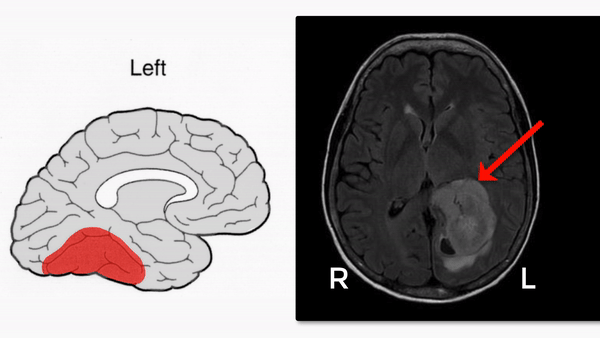

☰
Retrochiasmal Disorders
Occipital-Temporal Lesions
What is it?
Focal damage to posterior inferior temporal lobe causing poor visual recognition (“visual agnosia”)
Common causes of unilateral lesions: stroke
Common causes of bilateral lesions: Alzheimer disease, encephalitis, posterior reversible encephalopathy syndrome (PRES)
What does it look like?
Visual acuity is preserved
Tip:
visual acuity testing may falsely suggest poor acuity if the patient has pure alexia
Right temporal lesions
Homonymous hemianopia primarily affecting the left superior quadrants
Topographical agnosia (difficulty following familiar routes)

Left temporal lesions
Homonymous hemianopia primarily affecting the right superior quadrants
Inability to read, yet ability to spell and write to dictation (“pure alexia,” “alexia without agraphia”)
Bilateral temporal lesions
Bilateral homonymous hemianopia primarily affecting the superior quadrants
Inability to recognize famous or familiar faces (“prosopagnosia”), colors (“cerebral achromatopsia”), or standard objects (“visual object agnosia”)
What else looks like it?
Reduced level of consciousness
Developmental cognitive retardation
Delirium
Dementia
Psychogenic unresponsiveness
Poor cooperation
Impaired communication
What should you do?
Test visual acuity with tumbling Es or pictures in patients with alexia
Test for prosopagnosia by displaying famous faces in magazines or by asking patients to identify companions
Test for visual object agnosia
Instruct patients to identify common objects
If patients fail to identify common objects by sight, but can identify objects by grasping them, diagnose visual object agnosia
If patients cannot identify common objects by grasping them, but can describe how objects are used, diagnose a naming disorder (“dysnomia”)
If patients cannot describe how grasped objects are used, diagnose dementia or poor cooperation
Test for alexia without agraphia
Instruct patients to read common words
If patients cannot read common words, but can spell and write them to dictation, diagnose pure alexia (“alexia without agraphia”)
If patients cannot spell or write common words, diagnose aphasia, poor cooperation, poor education, or cognitive impairment
What will happen?
Diagnosis of recognition deficits is often delayed because standard examinations do not assess them
Patient responses are often falsely attributed to poor cooperation, depression, or dementia
Alexia falsely suggests reduced vision
Deficits may improve in stroke
Deficits will worsen in dementia
Trap:
widely-prescribed rehabilitative measures offer limited benefit
Retrochiasmal Disorders
Optic Tract Lesions
Lateral Geniculate Body Lesions
Optic Radiation Lesions
Visual Cortex Lesions
Occipital-Parietal Lesions
Occipito-Temporal Lesions